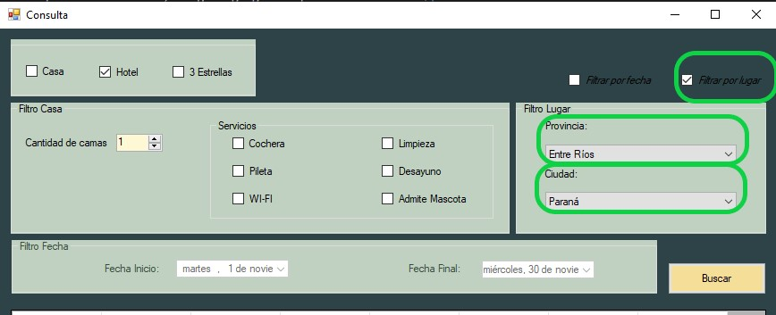
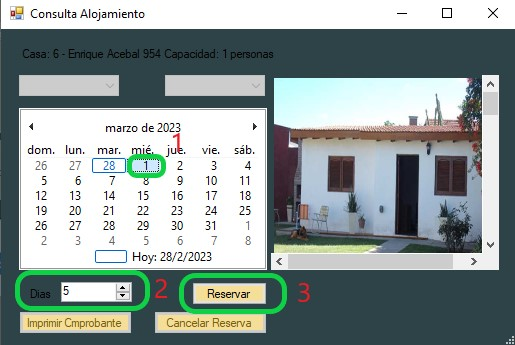

Para comenzar al generacion de una puede utilizar el boton "Agregar Reserva"
Tambien puede navegar por el menu desplegable y elegir la opcion "Reservas" y luego "Agregar" o precionar "Alt+"A

A continuacion se desplegara la ventana de Seleccion de alojamiento en la cual podra utilizar filtros para encontrar los alojamientos deseados
Una vez aplicado los filtros, presionando doble click sobre la linea en la que se encuentra el alojamiento deseado se desplegara la ventana de consultas para disponibilidad de dicho alojamiento

En esta ventana usted podra seleccionar sus preferencias segun sea su seleccion anterior un Hotel, o una Casa

Casa:
En el caso de una casa, no es necesario seleccionar tipo de habitacion y numero de habitacion, estas opciones figuran como desactivadas en la ventana
Por lo contrario, si se debera fijar el dia de inicio de la estadia usando el calendario de la ventana y el numero de dias que durara la misma usando el control "Dias"
El control "Dias" esta fijado por defecto con un minimo de dias en relacion a lo que la propiedad permite
Si el rango de fechas seleccionado es correcto se desplegara una ventana para el ingreso de datos de los ocupantes de la Casa en dicha reserva

Una vez ingresados los datos la reserva sera creada y se desplegara un comprobante
